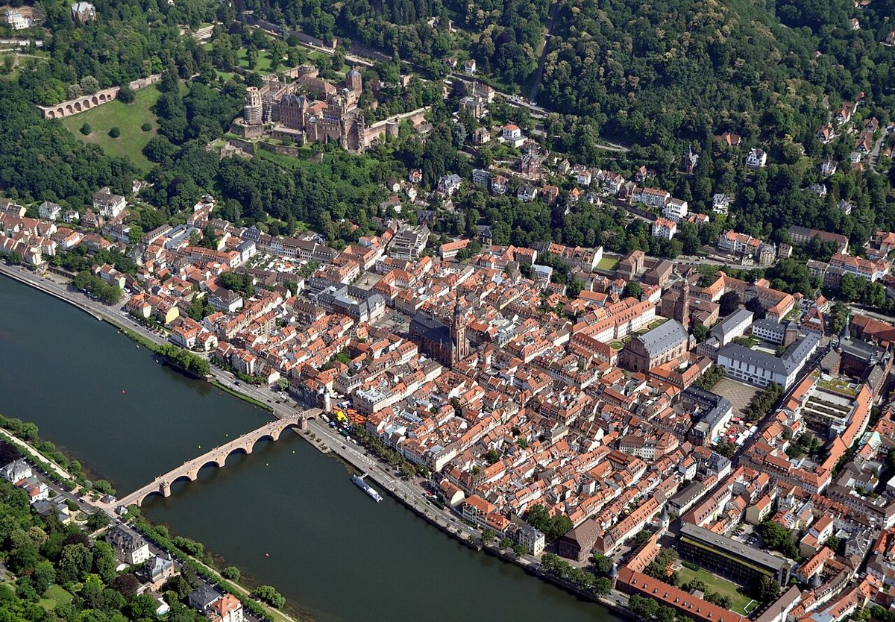

Heidelberg Altstadt: Un Encanto Histórico en Alemania

Heidelberg Altstadt es el corazón histórico de esta encantadora ciudad alemana. Con sus calles empedradas, edificios barrocos y el majestuoso Castillo de Heidelberg, pasear por aquí es como viajar en el tiempo. Ideal para amantes de la historia, la cultura y los paisajes pintorescos.
¿Cómo llegar a Heidelberg Altstadt?
Desde Frankfurt, puedes tomar un tren directo que tarda aproximadamente una hora. También hay conexiones en tren desde otras ciudades importantes como Munich o Stuttgart. Si prefieres el coche, la autopista A5 te dejará muy cerca. Una vez en Heidelberg, el transporte público o un paseo a pie son suficientes para explorar la Altstadt.
La mejor época para visitar
La primavera y el otoño son ideales, con temperaturas agradables y menos turistas. En verano hace más calor pero la ciudad está llena de vida. En invierno, el mercado navideño le da un ambiente mágico, aunque hace frío.
3-5 Imperdibles en Heidelberg Altstadt
1. Castillo de Heidelberg: Sus ruinas imponentes son el símbolo de la ciudad. Las vistas desde aquí son espectaculares.
2. Puente Viejo (Alte Brücke): Un lugar perfecto para fotos con el castillo de fondo.
3. Hauptstrasse: La calle principal, llena de tiendas, cafés y edificios históricos.
4. Iglesia del Espíritu Santo: En plena plaza del mercado, es una joya arquitectónica.
5. Sendero de los Filósofos: Un paseo con vistas panorámicas de la ciudad y el río Neckar.
¿Qué comer en Heidelberg Altstadt?
No te pierdas los Schweinshaxe (codillo de cerdo asado) en algún restaurante tradicional. También prueba las Heidelberger Studentenkuss, unos famosos chocolates. Para una experiencia local, toma una cerveza en alguna taberna de la Hauptstrasse.
Consejos finales
Caminar sin prisas es la mejor forma de disfrutar Heidelberg Altstadt. Lleva zapatos cómodos para las cuestas y no olvides la cámara: ¡cada rincón es fotogénico!
Haiktec
- El Huerto Autosuficiente en 7 Pasos: Guía Práctica para Hombres
- Planificador de Viajes a Berlín y Potsdam: Presupuesto, Itinerario y Checklist para Hombres
- Descubre Dresden y Sajonia: Guía Práctica para Viajeros Masculinos
Text mit KI erstellt und automatisch geprueft.